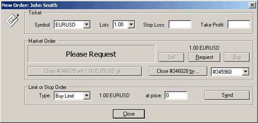
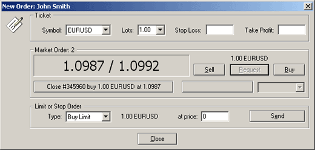

Закрытие позиции и удаление отложенных
ордеров
Чтобы закрыть
позицию дважды щелкните мышкой по открытой позиции в окне торгового терминала. Появится окно:

Если Вы просто хотите закрыть позицию по текущей цене,
нажмите кнопку Request. Через несколько секунд
появится цена, по которой можно полностью или частично закрыть позицию:

Если цена приемлема, нажмите "Close #... ..
at ..." (в нашем примере Close #345960 buy 1
EURUSD at 1.0987). Предложенная котировка будет действительна лишь
несколько секунд (отсчет секунд идет чуть выше предложенной цены), после
этого кнопка "Close ... .. at ..." станет
неактивной. Вы можете частично закрыть позицию. Для этого установите
необходимое число лотов в поле Lots. При закрытии
позиции, для которой среди открытых позиций имеются одна или более
встречных (для позиции, открытой на покупку - открытая позиция на продажу,
и наоборот) позиций по тому же инструменту, клиент имеет возможность
закрыть данную позицию путем одновременного закрытия встречной позиции.
Для этого надо нажать кнопку Close # ... by ...
(в нашем примере: Close #346028 by ...),
предварительно выбрав справа в списке позицию-"контрагента". Заметьте, что
после нажатия кнопки Request и получения
котировок Bid/Ask стали активными еще и кнопки Buy или Sell. Вы можете
открыть новую позицию на покупку, нажав кнопку Buy, или открыть позицию на продажу, нажав на Sell. Удалить отложенный ордер
вы можете несколькими способами:
- дважды щелкните мышкой по отложенному ордеру в окне торгового терминала;
- выделите отложенный ордер в окне торгового терминала и нажмите
правую кнопку мыши. В появившемся контекстном меню выберите пункт Modify or Delete Order.
После выполнения
любого из действий появится окно:

Для удаления отложенного ордера нажмите Delete.
Назад Содержание Далее